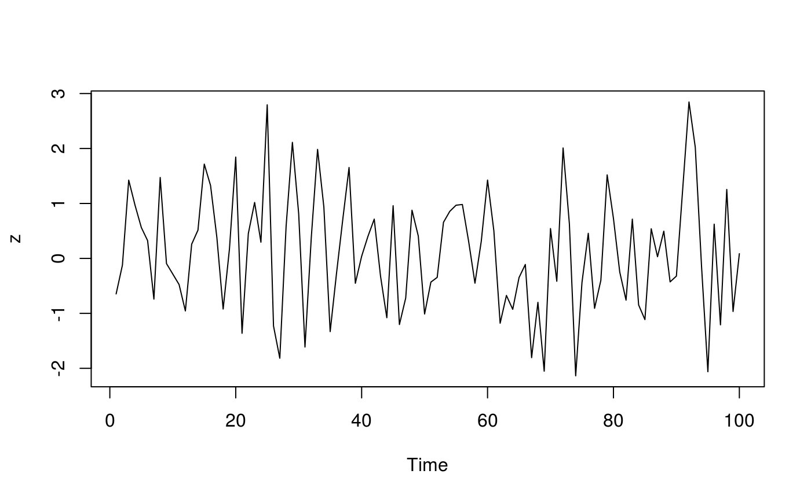

Overview
The magrittr package offers a set of operators which make your code more readable by:
- structuring sequences of data operations left-to-right (as opposed to from the inside and out),
- avoiding nested function calls,
- minimizing the need for local variables and function definitions, and
- making it easy to add steps anywhere in the sequence of operations.
The operators pipe their left-hand side values forward into expressions that appear on the right-hand side, i.e. one can replace f(x) with x %>% f(), where %>% is the (main) pipe-operator. When coupling several function calls with the pipe-operator, the benefit will become more apparent. Consider this pseudo example:
the_data <-
read.csv('/path/to/data/file.csv') %>%
subset(variable_a > x) %>%
transform(variable_c = variable_a/variable_b) %>%
head(100)Four operations are performed to arrive at the desired data set, and they are written in a natural order: the same as the order of execution. Also, no temporary variables are needed. If yet another operation is required, it is straightforward to add to the sequence of operations wherever it may be needed.
If you are new to magrittr, the best place to start is the pipes chapter in R for data science.
Installation
# The easiest way to get magrittr is to install the whole tidyverse:
install.packages("tidyverse")
# Alternatively, install just magrittr:
install.packages("magrittr")
# Or the development version from GitHub:
# install.packages("devtools")
devtools::install_github("tidyverse/magrittr")Usage
Basic piping
-
x %>% fis equivalent tof(x) -
x %>% f(y)is equivalent tof(x, y) -
x %>% f %>% g %>% his equivalent toh(g(f(x)))
Here, “equivalent” is not technically exact: evaluation is non-standard, and the left-hand side is evaluated before passed on to the right-hand side expression. However, in most cases this has no practical implication.
The argument placeholder
-
x %>% f(y, .)is equivalent tof(y, x) -
x %>% f(y, z = .)is equivalent tof(y, z = x)
Re-using the placeholder for attributes
It is straightforward to use the placeholder several times in a right-hand side expression. However, when the placeholder only appears in a nested expressions magrittr will still apply the first-argument rule. The reason is that in most cases this results more clean code.
x %>% f(y = nrow(.), z = ncol(.)) is equivalent to f(x, y = nrow(x), z = ncol(x))
The behavior can be overruled by enclosing the right-hand side in braces:
x %>% {f(y = nrow(.), z = ncol(.))} is equivalent to f(y = nrow(x), z = ncol(x))
Building (unary) functions
Any pipeline starting with the . will return a function which can later be used to apply the pipeline to values. Building functions in magrittr is therefore similar to building other values.
Pipe with exposition of variables
Many functions accept a data argument, e.g. lm and aggregate, which is very useful in a pipeline where data is first processed and then passed into such a function. There are also functions that do not have a data argument, for which it is useful to expose the variables in the data. This is done with the %$% operator:
iris %>%
subset(Sepal.Length > mean(Sepal.Length)) %$%
cor(Sepal.Length, Sepal.Width)
#> [1] 0.3361992
data.frame(z = rnorm(100)) %$%
ts.plot(z)
Code of Conduct
Please note that the magrittr project is released with a Contributor Code of Conduct. By contributing to this project, you agree to abide by its terms.